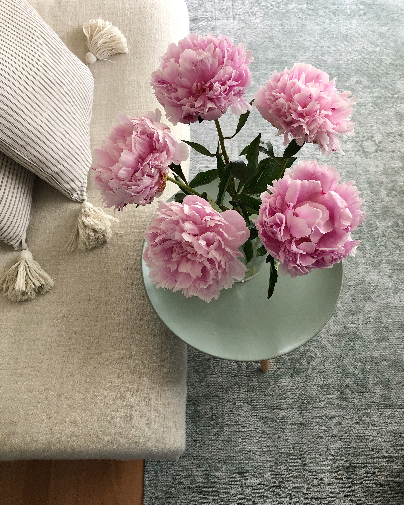

Flowers to grow in a cutting garden
Creating a cutting garden is a fantastic way to bring a slice of the outdoors in. Sowing flowers from seed or growing from cuttings can be a cheap and diverse alternative to the florists. Growing your own flowers at home also cuts down on transport miles so is kinder to the planet.
Flowers can be grown in dedicated beds or in amongst the vegetable garden as in a potager garden style.
Lathyrus odoratus (Sweet Peas)
With their long stems and fragrent flowers, sweet peas are a very popular cut flower. Regular cutting is essential to keep them productive.

Paeonia (Peonies)
Peonies come in many forms and so there is bound to be one that takes your fancy. The herbaceous varieties are particularly suited to cut flowers. Choose one with a long stem and large flower.

Dahlia
Dahlias are one of the best flowers to grow for use as cut flowers. They have a long vase life, and provide blooms throughout the season, from mid summer right through to the first frosts in autumn. There’s a huge range of different types to choose from with flowers in various forms and a spectrum of colours.
Anemones
Anemones are an easy to grow option for a cut flower garden. My particular favourite are Japanese anemones (Anemone hupehensis) with upright stems in varying shades of pink, purple or white.
Hydrangea
A bunch of freshly cut hydrangeas makes a stunning display. The stems can be placed in boiling water and left for 24 hours to prolong the blooms.

Spring Bulbs
Spring bulbs make excellent cut flowers. Narcissus, Tulipa, and Allium are all perfect for a seasonal spring display.